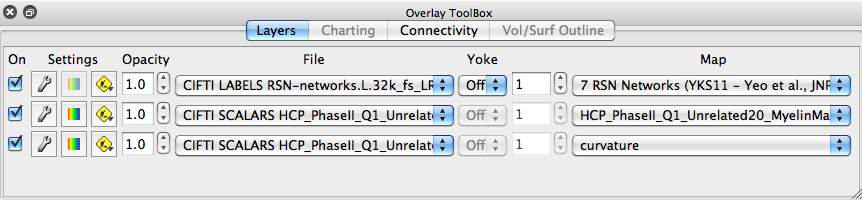

Overlay Toolbox
The Overlay Toolbox contains controls for
setting the data to be displayed on structures and in charts.
By default, the Overlay Toolbox is attached to the bottom of the Workbench
Window, under the Viewing
Area, in a horizontal configuration (top image).
It can also be attached to the left side
of the Viewing Area, in a vertical configuration (bottom image,
set in View
menu > Overlay Toolbox). Either
configuration can be detached from the Workbench Window by left
click + drag on the top of the
Overlay Toolbox. To reattach, double click on the top of the Overlay
Toolbox.
There are 4 tabs in the Overlay Toolbox, each controlling a
different type of data viewing:
- Layers
controls display of data maps on surfaces or in volumes.
- Charting
controls which files are charted and, for data series/time
series, which data for identified vertices is being displayed
on a chart.
- Connectivity
controls which Connectivity and Fiber orientation files, data
is being loaded from for display.
Tabs and files available for viewing change
depending on whether you are in Chart view,
Montage
view, Volume view,
All view,
or Surface
view.
